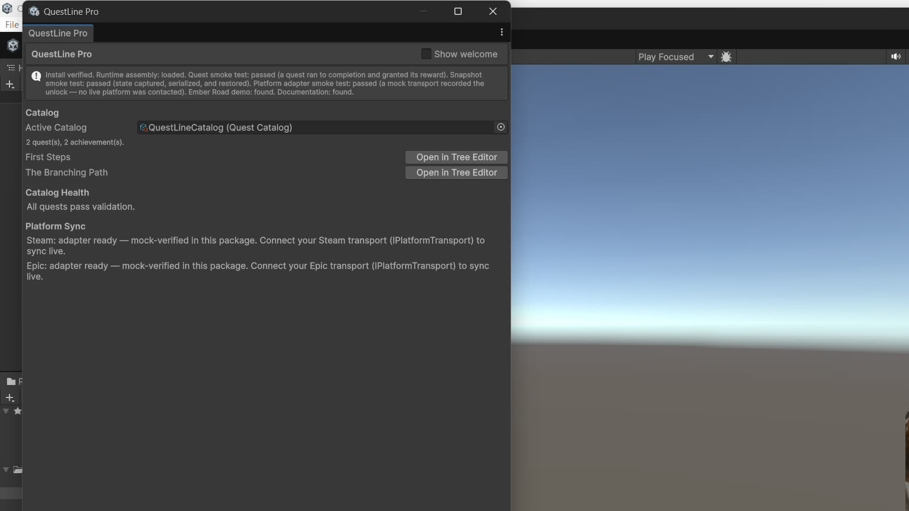
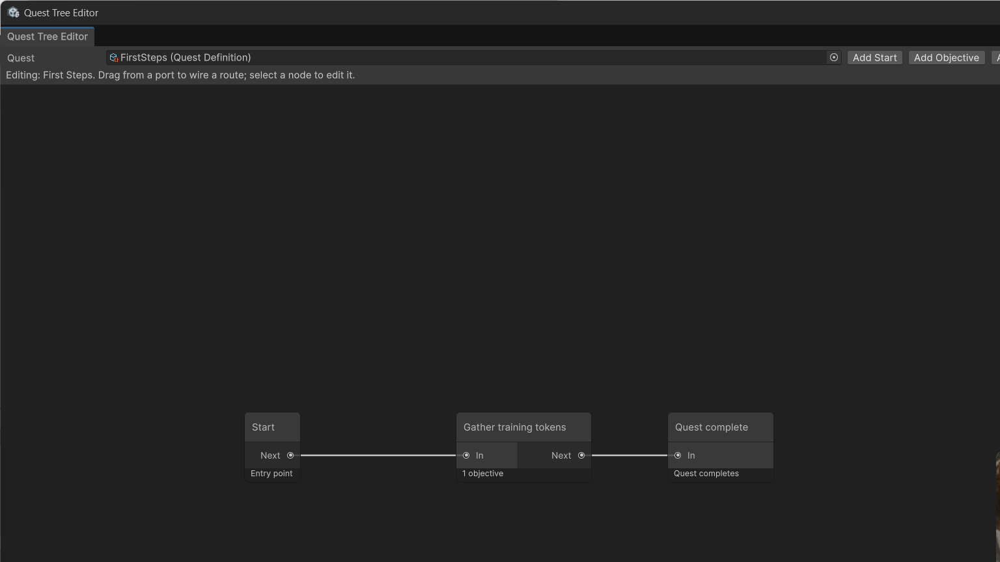
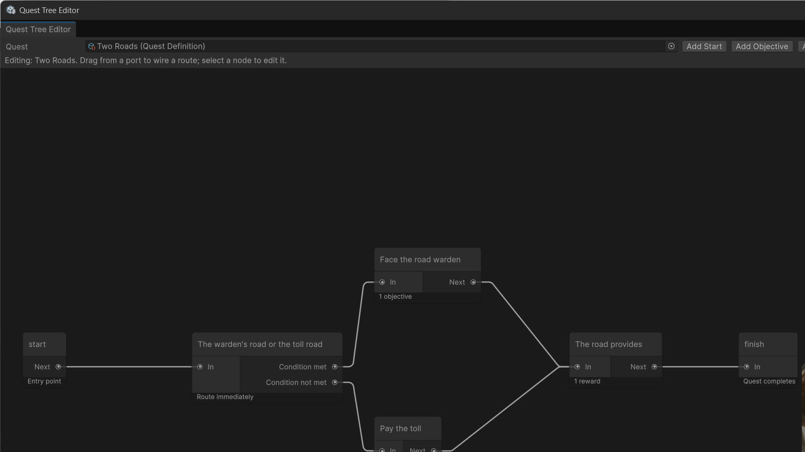
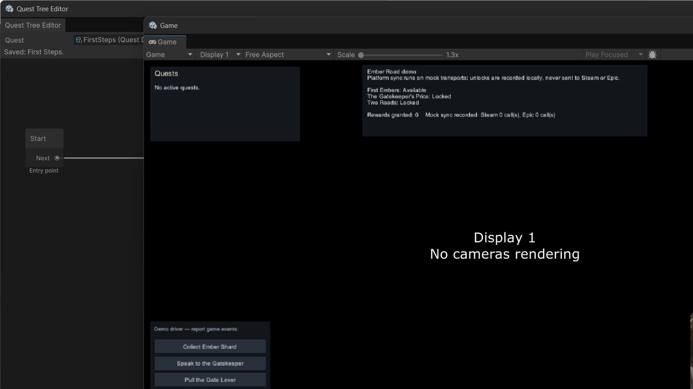

QuestLine Pro
QuestLine Pro is a quest, achievement and progression system for Unity. You draw each quest as a graph in the tree editor, a deterministic runtime tracker plays that graph in your game, and the same system carries achievements, save-game snapshots, and platform sync.

The four parts
Data
One ScriptableObject asset per quest and per achievement, listed in a catalog asset. Definitions are plain serialized fields — readable in the normal Inspector, friendly to version control.
Tree Editor
A GraphView window where quests are authored as graphs: Start, Objective, Branch, Reward and End nodes wired port to port. Everything writes back into the quest asset as it happens.
Runtime
The QuestTracker runs the graphs: objective counters, conditions, both branch styles, rewards that fire exactly once, and a whole-state snapshot your own save system can store.
Sync
Achievements unlock through the tracker and route to Steam and Epic adapter classes. The adapter layer is verified against the included mock harness; you connect your own platform SDK transport to go live (see Platform Adapters).
Who it is for
Unity projects that need quests, achievements and progression in one system instead of three: author the quest once as a graph, report progress from your game code with one call, and let the tracker settle states, rewards, achievements and snapshots. The loop from “quest accepted” to “achievement unlocked” lives in one place instead of being re-invented per project.
Included UI
A tracker HUD, a quest log and an achievement toast queue, all built from code at runtime — no prefabs to wire. Restyle or replace them freely; they bind to the tracker's events. See The UI Kit.
Honest scope
Version 1 is a quest system, not a dialogue system, an inventory, or a save system, and the Steam and Epic adapters are verified against a mock transport — no live platform sync has been tested. The full list is written down on the Honest Limits page so you can plan around it.
Requirements
- Unity 2022.3 LTS or Unity 6 (tested on 2022.3.22f1 and 6000.5.4f1).
- No package dependencies. Nothing else to install. The UI kit and the demo use Unity's UGUI package, which ships with the standard project templates — see the note in Quick Start.
Screenshots



Start here
The Quick Start takes you from import to a quest completing itself on screen in about ten minutes, using the two starter quests, then walks the Ember Road demo end to end.
Support
Questions and bug reports: bytelura@gmail.com — see the Support page for what is covered.